Welcome to Module 1
Before learning how to read charts, identify trading opportunities, or make investment decisions, it is important to understand the foundation of the stock market.
In this module, we will explore what the stock market is, how companies sell shares, the difference between traders and investors, and how stock exchanges operate.
Take your time with each topic. Read the explanations carefully because the information covered here will help you understand more advanced trading concepts later.
What Is the Stock Market?
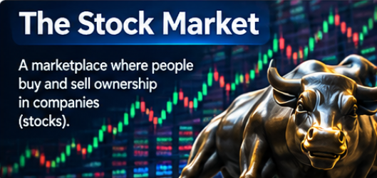
The stock market is a marketplace where people and institutions buy and sell shares of publicly traded companies.
Think of it as a marketplace, similar to a regular market where people buy and sell products. However, instead of purchasing groceries or clothing, participants trade ownership shares in companies.
The stock market allows companies to raise money from investors while giving individuals and institutions an opportunity to purchase ownership in those businesses.
Key Point
The stock market connects buyers and sellers who want to trade shares of publicly listed companies.
Understanding Securities and the Different Types of Securities
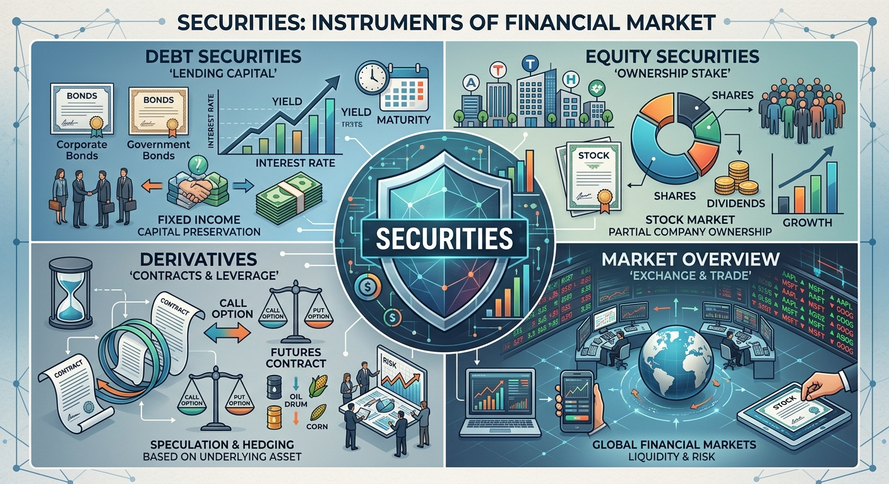
A security is a financial instrument that represents an ownership interest, a debt obligation, or certain financial rights. Securities can generally be bought and sold in financial markets. The precise legal definition can vary by jurisdiction.
Stocks are one type of security, but they are not the only type. The main categories to understand are equity securities, debt securities, and certain investment or derivative products.
Key Point
A stock is a type of security. Security is the broader term for a range of financial instruments.
1. Equity Securities
Equity means ownership. An equity security represents an ownership interest in a company. Common stock is a familiar example. When you buy shares of a publicly traded company, you acquire an ownership interest in that business.
Depending on the class of shares, shareholders may have voting rights. A company may also pay dividends, but dividends are not guaranteed. The value of shares can rise or fall.
Examples: Apple (AAPL), Microsoft (MSFT), and NVIDIA (NVDA).
2. Debt Securities
Debt securities represent money borrowed by an organization. When an investor buys a bond, the investor is generally lending money to the issuer, which may be a government or corporation.
The issuer typically agrees to pay interest and repay the principal according to the bond's terms. Repayment is not risk-free because an issuer could fail to meet its obligations.
Examples: U.S. Treasury securities and corporate bonds.
3. Derivatives
A derivative is a financial contract whose value is based on an underlying asset, benchmark, or rate. The underlying item might be a stock, stock index, commodity, currency, or interest rate.
Options are derivatives. An option buyer receives a right, but not an obligation, to buy or sell an underlying asset at a specified strike price under the contract's terms. Options have expiration dates and can lose value.
Call Option
A call option gives its buyer the right, but not the obligation, to buy the underlying asset at the strike price under the contract's terms.
Put Option
A put option gives its buyer the right, but not the obligation, to sell the underlying asset at the strike price under the contract's terms.
Option sellers take on contractual obligations and can face substantial risk. The potential risk depends on the position and whether it is covered or uncovered.
4. Exchange-Traded Funds (ETFs)
An exchange-traded fund, commonly called an ETF, is an investment fund whose shares trade on an exchange during the trading day. An ETF may hold a collection of stocks, bonds, or other assets.
When you buy an ETF share, you own a share of the fund. You do not directly own each individual company held by the fund.
Other Financial Instruments You May Hear About
| Instrument | What It Represents |
|---|---|
| Treasury Bills (T-Bills) | Short-term debt securities issued by the U.S. government. |
| Mutual Funds | Investment funds that pool money from investors to hold a portfolio of assets. Fund shares are securities. |
| Futures Contracts | Derivative contracts that generally obligate parties to transact on a future date under agreed terms. |
| Mortgage-Backed Securities | Financial instruments backed by pools of mortgage loans. |
Important to Understand
Not every financial instrument is legally classified as a security in every jurisdiction. Futures are derivatives, but their regulatory classification can differ from that of stocks and bonds.
Key Point
Equity securities represent ownership, debt securities represent borrowing, and derivatives derive their value from an underlying asset or reference. ETFs are fund shares that trade on an exchange.
What Is a Stock?
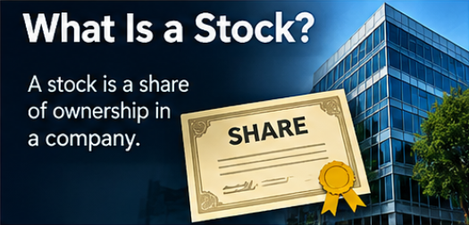
A stock is a type of financial security that represents ownership in a company.
When you purchase a share of a company's stock, you become a shareholder. This means you own a small portion of that business.
For example, if you purchase shares of Apple, you become one of the company's many shareholders.
The value of a stock can increase or decrease depending on several factors, including company performance, financial results, investor demand, and overall market conditions.
Key Point
A stock represents ownership in a company. A share is an individual unit of that ownership.
Why Do Companies Sell Shares to the Public?
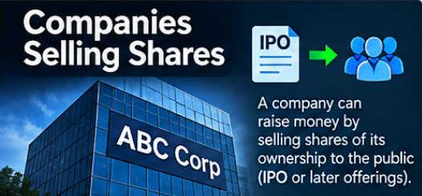
Companies sometimes need large amounts of money to expand their operations, develop new products, pay certain expenses, or invest in future opportunities.
One way a company can raise money is by selling shares to the public through a process known as an Initial Public Offering, commonly called an IPO.
When members of the public purchase shares, the company can receive capital that may help fund its business activities.
In return, shareholders receive an ownership interest in the company.
Key Point
Companies sell shares to raise capital and provide investors with an opportunity to own part of the business.
What Is the Difference Between a Trader and an Investor?
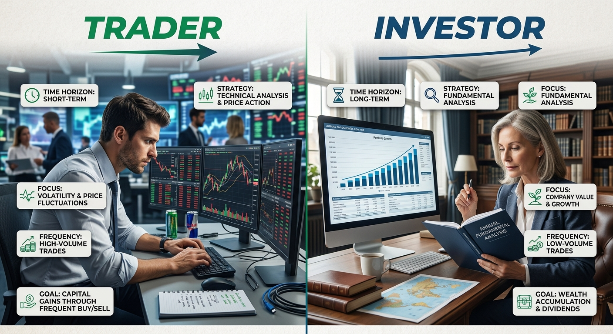
Although traders and investors both participate in financial markets, they generally have different goals, strategies, and time horizons.
A trader typically looks to profit from price movements over shorter periods, while an investor generally purchases assets with the intention of holding them for a longer period.
Trader
A trader buys and sells financial instruments to potentially profit from changes in market prices.
- Often focuses on short-term price movements.
- May hold positions for minutes, hours, days, or weeks.
- Often uses charts and technical analysis.
- May enter and exit the market frequently.
- Usually focuses on trading opportunities and price action.
Investor
An investor purchases assets with the intention of building wealth over a longer period.
- Generally focuses on long-term growth.
- May hold investments for years or decades.
- Often studies company performance and financial health.
- May earn returns through price appreciation and dividends.
- Usually focuses on the long-term value of an asset.
Example: Trader vs. Investor
Imagine two people purchase shares of the same company.
Person A — The Trader: Purchases shares at $100 and sells them a few days later at $110, aiming to profit from the short-term price movement.
Person B — The Investor: Purchases shares at $100 and holds them for several years because they believe the company has long-term growth potential.
Key Point
Traders generally focus on shorter-term price movements, while investors generally focus on longer-term ownership and wealth building.
Important to Understand
Neither approach guarantees a profit. Both trading and investing involve risk, and the value of financial assets can rise or fall.
Some people also combine both approaches by maintaining long-term investments while trading other financial assets.
What Does It Mean to Own a Share?
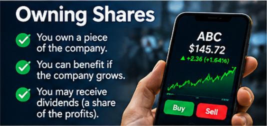
Owning a share means you own a small portion of a company. The size of your ownership depends on how many shares you own compared with the company's total shares.
For example, if a company has 1,000,000 shares outstanding and you own 1,000 shares, you own 0.1% of its outstanding shares.
Depending on the type of shares you own, you may also have certain shareholder rights, such as voting rights.
Key Point
Purchasing shares makes you a part-owner of the company, but it does not mean you personally control the business.
What Is a Shareholder?
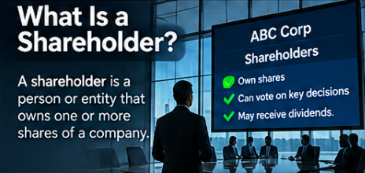
A shareholder is an individual, company, or institution that owns shares in a corporation.
Shareholders may benefit when a company's stock price increases. Some companies also distribute part of their profits to shareholders through dividend payments.
Depending on the class of shares, shareholders may have the right to vote on certain company matters.
Key Point
Anyone who owns shares in a company is considered a shareholder.
What Is a Ticker Symbol?
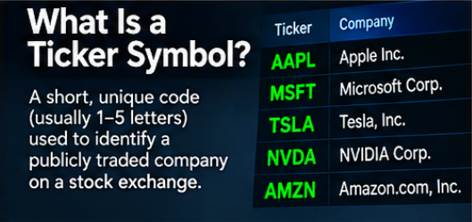
A ticker symbol is a unique combination of letters used to identify a publicly traded company's stock or another financial security on an exchange.
Instead of displaying a company's full name every time, trading platforms use ticker symbols to make it easier to identify and search for securities.
Examples of Ticker Symbols
| Company | Ticker Symbol |
|---|---|
| Apple | AAPL |
| Microsoft | MSFT |
| Amazon | AMZN |
| Tesla | TSLA |
| NVIDIA | NVDA |
| Alphabet (Google) | GOOGL |
Key Point
A ticker symbol is the abbreviation used to identify a stock or other security when searching or trading.
What Is the New York Stock Exchange (NYSE)?
The New York Stock Exchange, commonly known as the NYSE, is one of the largest and most recognized stock exchanges in the world.
It provides a marketplace where buyers and sellers can trade shares of companies that are listed on the exchange.
Many large and well-known companies have their shares listed on the NYSE.
Key Point
The NYSE is a stock exchange that provides a regulated marketplace for trading listed securities.
What Is NASDAQ?
NASDAQ is another major stock exchange in the United States. It is particularly well known for listing many technology companies.
Unlike the traditional image of a physical trading floor, NASDAQ operates as an electronic exchange.
Companies such as Apple, Microsoft, Amazon, and NVIDIA trade on NASDAQ.
NYSE vs. NASDAQ
| NYSE | NASDAQ |
|---|---|
| New York Stock Exchange | NASDAQ Stock Market |
| Uses a hybrid market structure, including a physical trading floor | Operates as an electronic exchange |
| Lists companies across many industries | Known for many technology and growth companies |
Key Point
Both NYSE and NASDAQ are major stock exchanges where investors and traders can buy and sell listed securities.
What Are Stock Market Trading Hours?
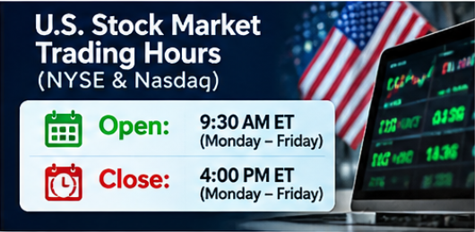
Stock market trading hours are the official times during which a stock exchange is open for regular trading.
The regular trading session for the NYSE and NASDAQ runs Monday through Friday, from 9:30 AM to 4:00 PM Eastern Time, except on exchange holidays and certain early-close days.
Regular Trading Session
| Market Event | Eastern Time |
|---|---|
| Market Opens | 9:30 AM |
| Market Closes | 4:00 PM |
Trading Hours in Jamaica
Jamaica observes UTC-5 throughout the year and does not observe daylight saving time. The time difference between Jamaica and the United States changes when the United States switches between daylight saving time and standard time.
| U.S. Time Period | Market Opens in Jamaica | Market Closes in Jamaica |
|---|---|---|
| U.S. Daylight Saving Time | 8:30 AM | 3:00 PM |
| U.S. Standard Time | 9:30 AM | 4:00 PM |
Key Point
Regular trading hours for the NYSE and NASDAQ are 9:30 AM to 4:00 PM Eastern Time.
What Time Does the NYSE Open and Close?
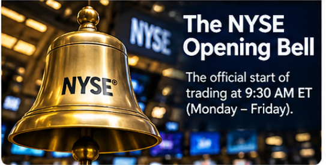
The New York Stock Exchange's regular trading session begins at 9:30 AM Eastern Time and ends at 4:00 PM Eastern Time.
The opening bell traditionally marks the start of the regular trading session, while the closing bell marks its end.
These times are important because trading activity, market volume, and price movements can change throughout the day.
Key Point
The NYSE opens at 9:30 AM ET and closes at 4:00 PM ET during regular trading days.
What Are Pre-Market and After-Hours Trading?
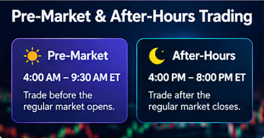
Although the regular stock market session runs from 9:30 AM to 4:00 PM Eastern Time, some trading can also take place outside these hours.
Pre-Market Trading
Pre-market trading takes place before the regular stock market opens.
Many U.S. trading platforms provide access to pre-market trading, with common session hours beginning as early as 4:00 AM Eastern Time and ending at 9:30 AM Eastern Time.
Regular Trading Hours
This is the main trading session, which runs from 9:30 AM to 4:00 PM Eastern Time.
After-Hours Trading
After-hours trading takes place after the regular market session has closed.
Many platforms provide access to after-hours trading, commonly from 4:00 PM to 8:00 PM Eastern Time.
Comparison of Trading Sessions
| Trading Session | Typical Eastern Time |
|---|---|
| Pre-Market | 4:00 AM – 9:30 AM |
| Regular Market | 9:30 AM – 4:00 PM |
| After-Hours | 4:00 PM – 8:00 PM |
Important to Understand
Extended-hours trading availability depends on the brokerage and trading platform. These sessions may have lower liquidity, wider bid-ask spreads, and greater price fluctuations.
Key Point
Pre-market takes place before the regular session, while after-hours trading takes place after the regular session closes.
What Is a Bull Market and a Bear Market?
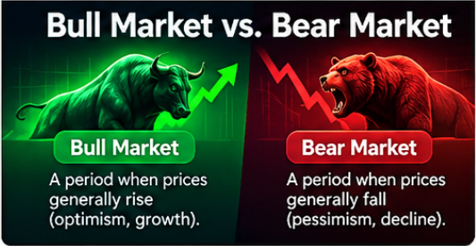
What Is a Bull Market?
A bull market is a period when stock prices or the broader market are generally rising.
During a bull market, investors are often optimistic about the economy and the future performance of companies.
The term is commonly associated with a market rise of approximately 20% or more from a recent low, although market definitions can vary.
What Is a Bear Market?
A bear market is a period when stock prices or the broader market are generally declining.
During a bear market, investors may become more cautious or pessimistic about the economy and company performance.
A decline of approximately 20% or more from a recent high is a commonly used definition of a bear market.
Bull Market vs. Bear Market
| Bull Market | Bear Market |
|---|---|
| Prices generally rise | Prices generally fall |
| Investor confidence is often stronger | Investor confidence is often weaker |
| Market sentiment is generally optimistic | Market sentiment is generally pessimistic |
| Associated with upward market trends | Associated with downward market trends |
Key Point
Bull means the market is generally rising. Bear means the market is generally falling.
Module 1 Summary
You have now completed the introductory material covering the stock market and some of the important terms used by traders and investors.
What You Should Understand
- What the stock market is.
- What securities are, including equity securities, debt securities, derivatives, and ETFs.
- What a stock represents.
- Why companies sell shares to the public.
- The difference between a trader and an investor.
- What it means to own shares.
- What a shareholder is.
- What ticker symbols are used for.
- What the NYSE and NASDAQ are.
- When the regular stock market opens and closes.
- How pre-market and after-hours trading work.
- The difference between a bull market and a bear market.
Before moving on to the next module, make sure you understand the concepts covered in this lesson.
Module 1 Examination
Now that you have completed the lesson, test your understanding by taking the Module 1 examination.
Read each question carefully and select the answer you believe is correct. Your score and percentage will be displayed when you complete the examination.